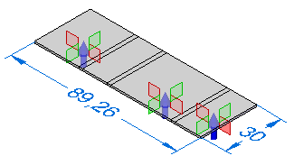

Flat Pattern Treatments page (Solid Edge Options dialog box)
Controls flat pattern treatment settings for the active sheet metal document. Changing these options once a flat pattern is generated causes a recompute of the flat pattern feature, or an update to the associative flat pattern if it was placed with the Insert Copy command. These tab options are available in the Solid Edge Sheet Metal environment.
- Outside Corner Treatments
-
Applies the treatment to outside corners. You can specify no corner treatment, a chamfer corner treatment, or a tangent arc corner treatment.
- Outside Value
-
Specifies the value for the outside corner treatment. This option is only available if the Outside Corner Treatments option is set to Chamfer or Radius.
- Inside Corner Treatments
-
Applies the treatment to inside corners. You can specify no corner treatment, a chamfer corner treatment, or a tangent arc corner treatment.
- Inside Value
-
Specifies the value for the inside corner treatment. This option is only available if the Outside Corner Treatments option is set to Chamfer or Radius.
- Simplify B-splines
-
Specifies that any B-spline curves on the formed part are simplified to lines and arcs. B-spline curves can be created when creating cutouts across bends and when using stencil font characters.
- Minimum Arc
-
Specifies the minimum value for the arc created from the B-spline curve.
- Deviational Tolerance
-
Specifies the deviation tolerance for the B-spline curve.
- Formed Feature Display
-
As Formed Feature
Displays the sheet metal features as formed features in the flat pattern.
 As Feature Loops
As Feature LoopsDisplays the sheet metal features as feature loops in the flat pattern.
 Note:
Note:The location of the feature loops is based on the punch side of the deformation feature.
As Feature OriginDisplays the sheet metal features as feature origins in the flat pattern.

Note:The location of the feature origins is based on the punch side of the deformation feature.
As Feature Loops and Feature OriginDisplays the sheet metal features as feature loops with feature origins in the flat pattern.

- Cut Size Default Values
-
Specifies the default maximum length (X) and maximum width (Y) for the flat pattern. These values appear in the Alarm section of the Flat Pattern Options dialog box.
- Removed System-Generated Bend Reliefs
-
When you create a close corner with no relief, the system creates a very small bend relief in the 3D model. Specifies that you want to remove system-generated bend reliefs when the flat pattern is created.
- Maintain Holes in the Flat Pattern
-
When a hole is placed on a non-orthogonal surface or angle, the resulting hole is elliptical when flattened. Creates the flat pattern with actual round holes.
- Save as Flat Command
-
Use Existing Flat Pattern (Use Folded Model if Not Defined)
Creates the flat pattern definition based on an existing flat pattern. Any material added or removed in the flat pattern environment is included when the flat is saved. If no flat pattern exists, the folded model is used to define the pattern.
Use Folded MoldCreates the flat pattern definition based on the folded model state, even if a flat pattern already exists. Any material added or removed in the flat pattern environment is excluded when the flat is saved.
How do I
Open the Solid Edge Options dialog boxLearn more
File locationsLook up more details
General tab (Solid Edge Options dialog box, Draft environment)View page (Solid Edge Options dialog box, Draft environment)
Save page (Solid Edge Options dialog box)
File Locations page (Solid Edge Options dialog box)
Manage tab, Solid Edge Options dialog box
User Profile page (Solid Edge Options dialog box)
Manage page (Solid Edge Options dialog box)
Dimension Style page (Solid Edge Options dialog box)
Drawing View Style tab (Solid Edge Options dialog box)
Generative Design tab (Solid Edge Options dialog box)
Drawing View Wizard tab (Solid Edge Options dialog box)
Helpers tab (Solid Edge Options dialog box)
Attachment Units page (Solid Edge Options dialog box, Draft)
Edge Display tab (Solid Edge Options dialog box)
Drawing Standards tab (Solid Edge Options dialog box)
Annotation tab (Solid Edge Options dialog box)
General page (Solid Edge Options dialog box, Part environment)
General page (Solid Edge Options dialog box, Profile environment)
Colors tab (Solid Edge Options dialog box)
Colors tab (Solid Edge Options dialog box, Draft)
View page (Solid Edge Options dialog box, Part environment)
Inter-Part page (Solid Edge Options dialog box)
Simulation tab (Solid Edge Options dialog box)
Thermal Load Options dialog box
General page (Solid Edge Options dialog box, Assembly environment)
Units page (Solid Edge Options dialog box)
View page (Solid Edge Options dialog box, Assembly environment)
Assembly page (Solid Edge Options dialog box)
Assembly Open As page (Solid Edge Options dialog box, Assembly environment)
Shape Search page (Solid Edge Options dialog box)
Requirements page (Solid Edge Options dialog box)
Electrical Routing page (Solid Edge Options dialog box)
Tube Properties page (Solid Edge Options dialog box)